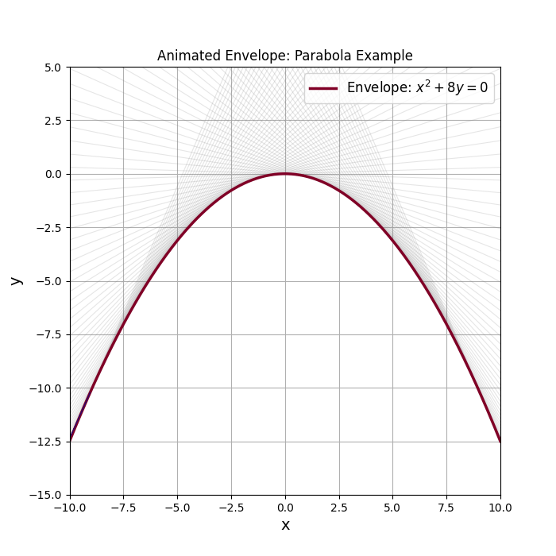

The family of lines tangent to the parabola \( x^{2}+8y=0 \) is the general solution of a first-order ODE. Their envelope,
solves the same equation yet is not a member of the family — a singular solution. All along it, value and slope coincide with one tangent line, so uniqueness fails there.
